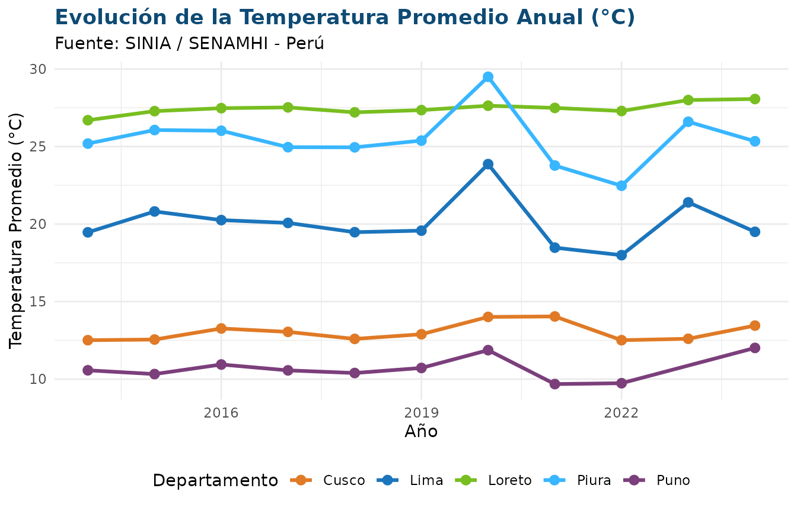

Introducción
El paquete siniaR proporciona una
interfaz directa y programática en R para consultar, estructurar y
visualizar las estadísticas ambientales oficiales del Perú desde el
portal del Sistema Nacional de Información Ambiental
(SINIA), administrado por el Ministerio del Ambiente
(MINAM).
A través de siniaR, analistas, investigadores y
tomadores de decisiones pueden automatizar la extracción de series
temporales, consultar fichas técnicas metodológicas y generar
visualizaciones reproducibles.
1. Descubrimiento y Búsqueda de Indicadores
Explorar el catálogo temático
Con sinia_indicadores() podemos listar todas las
estadísticas disponibles organizadas por su árbol temático y código
numeral:
# Listar todos los indicadores bajo el marco MDEA (ONU)
indicadores <- sinia_indicadores(marco = "mdea")
head(indicadores, 10)
#> # A tibble: 10 × 7
#> id numeral nombre nivel clasificador_id padre_id marco
#> <int> <chr> <chr> <int> <int> <int> <chr>
#> 1 1 1.1.1.1 Temperatura del aire prom… 4 NA 55 mdea
#> 2 2 1.1.1.2 Temperatura máxima promed… 4 NA 55 mdea
#> 3 3 1.1.1.3 Temperatura mínima promed… 4 NA 55 mdea
#> 4 4 1.1.1.4 Precipitación total anual… 4 NA 55 mdea
#> 5 5 1.1.1.5 Humedad relativa promedio… 4 NA 55 mdea
#> 6 6 1.1.1.6 Número de horas de sol an… 4 NA 55 mdea
#> 7 7 1.1.1.7 Radiación ultravioleta pr… 4 NA 55 mdea
#> 8 8 1.1.1.8 Ozono atmosférico mínimo,… 4 NA 55 mdea
#> 9 9 1.1.1.9 Número de tipos de clima … 4 NA 55 mdea
#> 10 10 1.1.2.1 Superficie de lagunas de … 4 NA 56 mdeaBúsqueda por palabra clave
La función sinia_buscar() permite buscar estadísticas
por términos clave sin distinguir mayúsculas, minúsculas ni tildes:
# Buscar estadísticas relacionadas con calidad del aire o material particulado
aire <- sinia_buscar("pm10")
aire
#> # A tibble: 2 × 7
#> id numeral nombre nivel clasificador_id padre_id marco
#> <int> <chr> <chr> <int> <int> <int> <chr>
#> 1 42 1.3.1.2 Promedio anual de partícul… 4 NA 62 mdea
#> 2 44 1.3.1.4 Material particulado con d… 4 NA 62 mdea2. Consulta de la Ficha Técnica Oficial
Cada estadística en el SINIA cuenta con una Ficha Técnica estandarizada que detalla la entidad generadora, la fórmula de cálculo, el ámbito geográfico, la periodicidad de los datos y notas explicativas:
# Consultar la ficha técnica del indicador ID = 1 (Temperatura del aire)
ficha <- sinia_ficha(1)
fichaTambién podemos acceder a cualquiera de sus campos directamente como una lista:
ficha$fuente
#> [1] "Servicio Nacional de Meteorología e Hidrología (Senamhi)"
ficha$unidad_medida
#> [1] "Grado Celsius (°C)"
ficha$periodo_serie
#> [1] "2014-2024"3. Descarga y Transformación de Datos
La función sinia_datos() procesa las matrices de datos
del SINIA y permite obtenerlas directamente en formato ancho
("wide") o largo (tidy, "long"):
Formato Largo (Long / Tidy)
Ideal para manipulaciones con dplyr y gráficos con
ggplot2:
datos_temp <- sinia_datos(id = 1, pivot = "long")
head(datos_temp, 12)
#> # A tibble: 12 × 3
#> departamento anio valor
#> <chr> <int> <dbl>
#> 1 Amazonas 2014 14.9
#> 2 Áncash 2014 12.5
#> 3 Apurímac 2014 14.2
#> 4 Arequipa 2014 16.1
#> 5 Ayacucho 2014 18.4
#> 6 Cajamarca 2014 15.0
#> 7 Cusco 2014 12.5
#> 8 Huancavelica 2014 10.4
#> 9 Huánuco 2014 20.4
#> 10 Ica 2014 21.3
#> 11 Junín 2014 12.7
#> 12 La Libertad 2014 20.9Formato Ancho (Wide)
Ideal para reportes tabulares o resúmenes ejecutivos:
datos_wide <- sinia_datos(id = 1, pivot = "wide")
head(datos_wide, 6)
#> # A tibble: 6 × 12
#> departamento x2014 x2015 x2016 x2017 x2018 x2019 x2020 x2021 x2022 x2023 x2024
#> <chr> <dbl> <dbl> <dbl> <dbl> <dbl> <dbl> <dbl> <dbl> <dbl> <dbl> <dbl>
#> 1 Amazonas 14.9 15.1 15.6 15.2 14.8 15.0 15.3 15.0 15.0 15.5 16.0
#> 2 Áncash 12.5 12.8 13.1 12.3 12.0 12.5 13.4 11.2 11.1 12.5 NA
#> 3 Apurímac 14.2 14.5 14.9 14.3 14.2 14.6 15.5 13.6 15.6 14.3 NA
#> 4 Arequipa 16.1 17.1 17.3 16.6 16.6 17.0 17.4 16.2 16.0 17.4 17.9
#> 5 Ayacucho 18.4 18.3 18.8 18.1 17.1 17.0 18.2 17.4 17.7 18 17.8
#> 6 Cajamarca 15.0 15.4 15.6 15.0 14.9 15.0 15.5 14.9 14.8 15.4 15.94. Visualización con ggplot2
Podemos combinar fácilmente los datos obtenidos con la estética del SINIA:
# Descargar serie temporal de temperatura en formato tidy
df <- sinia_datos(1, pivot = "long")
# Filtrar departamentos representativos de costa, sierra y selva
deptos <- c("Lima", "Loreto", "Cusco", "Piura", "Puno")
df |>
filter(departamento %in% deptos, !is.na(valor)) |>
ggplot(aes(x = anio, y = valor, color = departamento)) +
geom_line(linewidth = 1.1) +
geom_point(size = 2.5) +
scale_color_manual(values = c(
"Lima" = "#1B75BC",
"Loreto" = "#78BE20",
"Cusco" = "#E07A26",
"Piura" = "#38B6FF",
"Puno" = "#7B3F7B"
)) +
labs(
title = "Evolución de la Temperatura Promedio Anual (°C)",
subtitle = "Fuente: SINIA / SENAMHI - Perú",
x = "Año",
y = "Temperatura Promedio (°C)",
color = "Departamento"
) +
theme_minimal(base_family = "sans") +
theme(
plot.title = element_text(face = "bold", color = "#0E4B75"),
legend.position = "bottom"
)
5. Objeto Integrado (sinia_estadistica)
Si requieres tanto la ficha técnica completa como los datos tabulares en una sola estructura:
est <- sinia_estadistica(1, pivot = "long")
est
#> # A tibble: 6 × 3
#> departamento anio valor
#> <chr> <int> <dbl>
#> 1 Amazonas 2014 14.9
#> 2 Áncash 2014 12.5
#> 3 Apurímac 2014 14.2
#> 4 Arequipa 2014 16.1
#> 5 Ayacucho 2014 18.4
#> 6 Cajamarca 2014 15.0